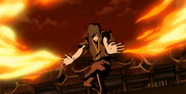

Animação 3D
3D, também conhecido como CGI (imagens geradas por computador), é o tipo mais popular de animação para filmes de longa-metragem atualmente, e tornou-se comum também na TV e em curtas-metragens.
Este é também o mesmo tipo de animação usada para criar personagens digitais para filmes de ação ao vivo e animação para videojogos.
Um animador usa um fantoche digital (chamado de "character rig") para posicionar a personagem, e depois usa um sistema de caminhos de movimento (ou splines) para definir o movimento da personagem entre essas poses
O computador procede à interpolação dos quadros da animação entre os quadros-chave. O animador então refina esses frames até que eles fiquem satisfeitos com a animação.
A animação 3D é um processo tecnicamente intensivo, que muitas vezes envolve muitos especialistas separados para modelar o personagem, montá-lo com ossos e controlos, animá-lo, e depois texturizá-lo e iluminá-lo para a versão final.
Em vez de desenhados ou construídos com argila, os personagens em animação 3D são modelados digitalmente no programa, e depois equipados com um 'esqueleto' que permite aos animadores moverem os modelos.
A animação é feita ao colocar os modelos em certos quadros-chave, depois dos quais o computador calcula e executa uma interpolação entre esses quadros para criar movimento.
Quando a modelagem e/ou animação estiver completa, o computador irá renderizar cada frame individualmente, o que pode ser muito demorado, dependendo da qualidade das imagens necessárias.
um animador 3D vai passar a maior parte do tempo a olhar para curvas que representam o movimento de diferentes partes do corpo ao longo do tempo.
Outra grande diferença da animação 3D é que, ao contrário da animação tradicional, as partes do corpo do personagem estão sempre presentes e devem ser levadas em consideração.
História
A animação 3D revolucionou definitivamente o aspecto da indústria de animação nos dias de hoje, e tudo começou em 1995 com Toy Story, dirigido por John Lassetter.
A animação gerada por computador não era completamente nova na época, pois já tinha sido usada em reclames de TV, filmes e jogos de computador, mas o Toy Story definiu a barra ao ser a primeira longa-metragem de animação por computador, reimaginando a indústria da animação.
A animação 3D também leva a estúdios que tentam alcançar animações foto-realistas, combinando processamento computadorizado de alto nível com captura avançada de movimento. Isso levou a filmes como A Trilogia do Senhor dos Anéis, Avatar, e oPlaneta dos Macacos.

Animação 2D Tradicional
O primeiro tipo de animação 2D pode ser chamado de animação tradicional ou animação celuloide. Prefiro o termo animação desenhada à mão porque isso define o seu aspecto mais importante - o facto de ser desenhada à mão.
Este é o tipo clássico de animação com que provavelmente está mais familiarizado. Antigamente, os animadores desenhavam personagens quadro a quadro, e depois esses desenhos eram transferidos para folhas de acetato transparente chamadas celuloides para pintura. É daí que vem o termo animação cel.
Durante os anos 90, quase todos os estúdios de animação deixaram de usar cels e começaram a digitalizar desenhos para o computador para colorir digitalmente, e agora muitos animadores de desenhos à mão saltam completamente o papel e desenham directamente para o computador usando um tablet ou monitores.
Assim, a animação desenhada à mão poderia ser feita inteiramente analógica ou inteiramente digital, ou alguma mistura das duas. O importante é que os animadores de desenho à mão ainda criam as suas animações quadro a quadro usando as mesmas técnicas e princípios dos velhos tempos do papel e dos cels.
História
As técnicas de animação com as quais estamos familiarizados apareceram pela primeira vez em 1650 na Lanterna MágicaO inventor veneziano Giovanni Fontana (se ele é ou não realmente o inventor ainda é muito debatido). Uma simples lanterna com uma faixa de animação deslizando por uma lente bruta, iluminada por uma única vela, foi a primeira introdução da humanidade à projeção. Era usada principalmente para assustar as pessoas com imagens de criaturas demoníacas a correr na parede, e geralmente brincava com as superstições das pessoas.
Muitas outras invenções surgiram, como o Fenacistoscópio e o zootropo, mas a primeira projeção de animação numa tela veio em 1877 com o Praxinoscópio, inventado pelo professor de ciências francês Charles-Émile Reynaud. Mais tarde, ele inventou a Théâtre Optique em 1888, que ele usou para encenar a primeira exibição pública de animação no Musée Grévin, em Paris, em 1892.
Lá ele exibiu a curta animada Pauvre PierrotO que é notável por ter sido a primeira vez que foram utilizadas perfurações de filmes, e também por ter a animação desenhada diretamente nos quadros, em vez de ser fotografada.
O primeiro filme gravado numa película foi feito em 1900, que incluía sequências animadas onde J. Stuart Blackton desenha um homem num corredor segurando uma garrafa de vinho, e o homem a agarrar a garrafa. Blackton continuou cinco anos depois com Fases Humorosas de Caras Engraçadasque cimentou J.Stuart Blackton como o antepassado da animação americana.
Em 1908, ao chegar à França, vimos o primeiro filme de animação do mundo, realizado pelo artista francês. Émile Cohl. O filme chamava-se Fantasmagorie, que continha figuras de pau que encontravam vários objectos inanimados.
Enquanto os anos 1910 se desenrolavam, as animações produzidas em estúdio foram aparecendo com o cartoonista do jornal Winsor McCayque dirigiu várias curtas animadas.
Durante a década de 1910, as animações eram chamadas de 'Desenhos animados'. Elas eram produzidas principalmente para salas de cinema como atrações pré espetáculo, para serem exibidas antes da longa-metragem. John Randolph Bray e Earl Hurd foram os produtores de animação de maior sucesso da década, e foram responsáveis pelo patenteamento do processo de animação celular, que mais tarde dominaria a indústria de animação durante a maior parte do século.
Hoje em dia, a animação tradicional é feita principalmente em computadores ao usar um tablet. Normalmente é animado em 12 quadros por segundo, com ações ocasionais mais rápidas animadas em 24 quadros por segundo.
Animação 2D
Hoje em dia existem novas formas de criar animação 2D ao usar um fantoche digital 2D. São personagens 2D que são construídas com um sistema de ossos e controlos que podem ser manipulados de forma similar a um equipamento de personagens 3D.
A diferença entre os personagens 2D manipulados e os desenhados à mão pode ficar um pouco confusa. Programas como Toon Boom Harmony e Adobe Animate CC permitem-lhe misturar e combinar perfeitamente animação desenhada à mão com técnicas de fantoches 2D, por vezes até dentro da mesma personagem.
Uma personagem pode ter ossos que deixam o animador criar poses, mas também ter outras partes que são animadas à mão.

História
No final dos anos 90, devido a restrições de largura de banda, muitos artistas começaram a usar Flash para distribuir animações curtas (e muito limitadas) na web, que geralmente eram muito pequenas em tamanho.
Essa limitação deu ao Flash o apelo de massa que fez dele um sucesso tão grande entre artistas e animadores independentes.
O Flash realmente disparou em 2005, quando foi comprado pela Adobe. Quando o YouTube começou a crescer, ele explodiu completamente, e hoje pode encontrar milhares de Animações em flash ali.
A razão pela qual a 2D foi colocada numa categoria separada é que, além da opção de animar quadro a quadro, um animador tem a opção de criar rigs para os personagens e depois mover as partes do corpo individualmente em vez de desenhar o personagem repetidamente.
Estas flexibilidades oferecem mais opções aos principiantes quando se aproximam da animação, especialmente se o desenho não for o seu forte. A animação tradicional, por outro lado, requer habilidades de desenho muito fortes.
Animação Stop Motion
O stop motion tem várias variantes, mas todas elas envolvem a manipulação de objectos do mundo real. Estes objectos são movidos ligeiramente, e fotografados um quadro de cada vez. Quando mostrados em sequência, estes quadros criam a ilusão de movimento. Como por exemplo: argila,marionetes,figuras de ação,recorte, silhueta,pixelação.
Todos eles têm de ser filmados continuamente, o que significa começar no frame um e filmar cada frame um após o outro, até ao fim da cena.
Se for cometido um erro num quadro, é muito difícil consertá-lo sem ter de começar tudo de novo. Não se pode simplesmente redesenhar esse frame como se pode em animação 2D. Isto torna este tipo de animação particularmente intenso e requer muita paciência.
Em stop motion de ponta, um boneco especialmente preparado é filmado num palco em miniatura.
História
A animação Stop-Motion era muito utilizada como efeitos especiais antes da introdução da animação CGI, e como tal tem uma história muito longa tanto na indústria de animação como na indústria cinematográfica, a começar pelo The Humpty Dumpty Circus (1887, Blackton). Uma das primeiras animações em argila foi Modelling Extraordinary (1912), e a primeira animadora foi uma artista em stop-motion chamada Helena Smith Dayton, que fez um curta de animação em argila baseado em Romeu e Julieta em 1917.
Outra técnica, que surgiu na década de 80, foi o Go Motion. Esta técnica envolvia programar um computador para mover os modelos para os animadores antes de cada frame ser fotografado. Foi utilizada na criação de efeitos visuais para RoboCop (1987, Verhoven) e The Empire Strikes Back (1980, Kershner). Foi muito mais complicado do que fazê-lo à mão, mas o resultado foi uma animação de aspeto mais realista.
A stop-motion estabeleceu os padrões de efeitos visuais com mestres como Ray Harryhausen, que criou animações para Jason e os Argonautas (1963, Chaffey) e Clash of the Titans (1981, Davis), ou Nick Park, que criou a franquia Wallace e Gromit. No entanto, a stop-motion nem sempre foi feita para curtas-metragens e efeitos visuais. Houve muitos longas-metragens de animação em stop-motion, mais notavelmente O Pesadelo Antes do Natal (1993, Selick) e Wallace e Gromit: A Maldição do Rabbit-da-Guerra (2005, Park.)
Animação Motion Graphics
A última grande categoria de animação são os motion graphics. Os motion graphics focam-se em fazer apresentações dinâmicas e interessantes de logotipos de texto em movimento e ilustrações básicas.
Os motion graphics podem ser tanto 2D como 3D, e encontrá-los-á em todos os lugares em reclames, vídeos explicativos, eventos desportivos, notícias e outras produções de TV.
A animação de personagens está geralmente fora do escopo dos motion graphics, mas muitos dos princípios centrais da animação também se aplicam aos gráficos em movimento.
O processo de criação de Motion Graphics depende dos programas utilizados, uma vez que os softwares de edição de vídeo muitas vezes têm UI ou configurações diferentes, mas a ideia é a mesma. Motion Graphics geralmente envolve a animação de imagens, textos ou videoclipes, ou a utilizar enquadramento chave que são entrelaçados para fazer um movimento suave entre quadros.

História
O termo Motion Graphics surgiu com a edição de vídeo baseada em computador, já que programas como Adobe After Effects e Apple Motion tornaram a edição de imagens muito mais fácil e rápida.
Anteriormente, antes do advento da edição por computador, era um processo muito demorado, o que o limitava a produções de alto orçamento. Hoje, é muito popular em anúncios publicitários, programas de notícias, eventos desportivos e vídeos online.